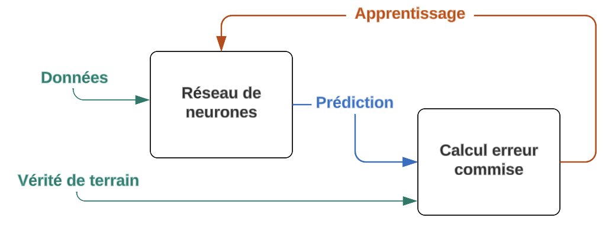
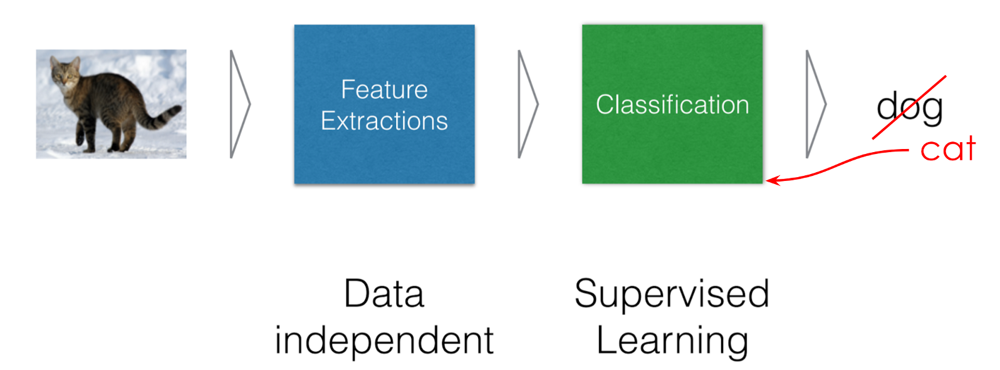
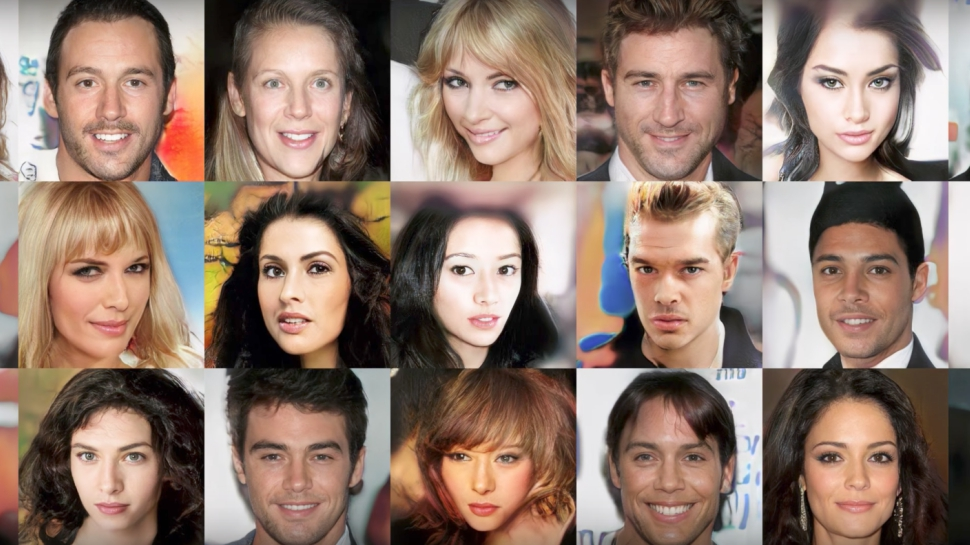
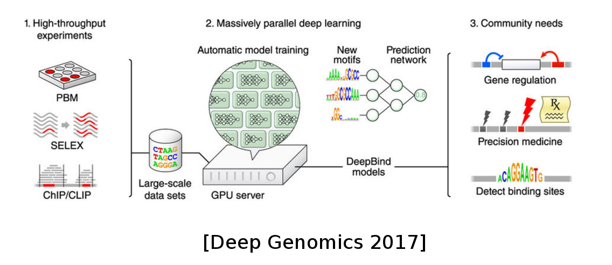

class: center, middle <!-----========================================================================================--------------> # Introduction au Deep Learning pour la Télédétection ### Rémy Courdier <p id="last-updated">Dernière mise à jour : </p> .affiliations[ ] .footer[Avec des slides de Evann Courdier, Charles Ollion et Olivier Grisel <BR>(EPFL, INRIA) ] <!-----------------------------------------------------------------------------------------------------------> --- # Plan du cours ### En théorie... - Présentation Générale Machine Learning et Deep Learning - .grey[Aspects theorique du Machine learning et Deep Laerning<br> (modèles et architectures,…)] - .grey[Présentation Deep Learning for GIS] -- count:false .grey[ ### En pratique... - TP : Classification d’images satellitaires - TP : Object detection / counting ] <!-----------------------------------------------------------------------------------------------------------> --- # Machine Learning (ML) .center[Le Machine Learning est un domaine de l'intelligence artificielle qui consiste à développer des algorithmes capables d'apprendre à partir de données dans le but de résoudre une grande variété de problèmes et prendre des décisions.] ### Principe : - apprentissage à partir des données plutôt que programmer explicitement un code pour résoudre un problème. - contruction d'algorithmes **génériques** qui peuvent identifier des choses interéssantes sur nos données. - pas d'écriture de codes particuliers pour différents problèmes. - construction de l'algorythme qui génère la logique en se basant sur les données. ??? Generiques = code de l'algo n'est pas propre a un pbm en particulier <!-----------------------------------------------------------------------------------------------------------> --- layout:true # Machine Learning traditionnel --- .left-column[ ### Supervisé : - Classification - Régression .grey[### Non supervisé : - Clustering - Modèles génératifs ]] .right-column[ .right[] ] --- count:false .left-column[ ### Supervisé : - Classification - Régression ### Non supervisé : - Clustering - Modèles génératifs ] .right-column[ <br><br><br><br><br><br> .right[<img src="images/rc-intro/fig_apprentissage_non supervise.png" style="width: 110%;" />] ] ??? En supervisé, on a un objectif particulier à prédire, par exemple dans la cas de la classif, etant donné une image en entrée, dire si c'est ... En non supervisé, il n'y a pas d'objectif. On veut que l'algorithme trouve des tendances, des motifs dans les données. <!-----------------------------------------------------------------------------------------------------------> --- layout:false # ML traditionnel - Classification .center[<img src="images/init/catsandogs.jpg" style="width: 100%;" />] -- count:false .center[<img src="images/init/cat.jpg" style="width: 20%;" />] .center[.big[?]] <!-----------------------------------------------------------------------------------------------------------> --- ## ML - Classification et Télédétection .mmmedium[Algorithme de "classification au plus proche voisin" largement répandu dans le monde de la télédétection. Technique qui repose sur une digitalisation manuelle de régions d’entraînement.<BR> Pour chaque zone d’entraînement appelées **Region Of Interest (ROI)**, les valeurs des pixels sous-jacents sont relevées, les moyennes sont calculées, et chaque classe est ainsi caractérisée par une signature radiométrique. On associe alors à chaque pixel d'une l’image, la classe qui lui est le plus proche d’un point de vue radiométrique.] .center[ <img src="images/rc-intro/fig_classif_dist_min_bandes - Grande.png" style="width: 90%;" /><br> .credits[Paul Passy (2017) - https://www.ppassy.fr/teledetection/2017/03/20/la-classification-au-plus-proche-voisin/] ] <!-----------------------------------------------------------------------------------------------------------> --- # ML traditionnel - Régression .center[ ] <!-----------------------------------------------------------------------------------------------------------> --- exclude:true ## ML - Régression et Télédétection .mmmedium[Algorithme ...] .center[ ] .credits[source : Jérôme Lejot, Hervé Piégay, Peter David. Hunter, Bertrand Moulin et Mathieu Gagnage (2013) - https://doi.org/10.4000/geomorphologie.9362] ??? page exclue du diaporama <!-----------------------------------------------------------------------------------------------------------> --- # ML traditionnel - Clustering .center[<img src="images/init/clustering.png" style="width: 100%;"/>] <!-----------------------------------------------------------------------------------------------------------> --- # ML traditionnel - Modèles génératifs .center[<img src="images/init/imInput.jpg" style="width: 25%;" /> <span class="big" style="position:relative;bottom:80px;margin: 0 50px;">+</span> <img src="images/init/imStyle.jpg" style="width: 25%;" />] -- count:false .center[] <!-----------------------------------------------------------------------------------------------------------> --- count:false ## ML traditionnel - Modèles génératifs .center[] <!-----------------------------------------------------------------------------------------------------------> --- # Machine Learning traditionnel .center[<img src="images/init/image_ml.png" style="width: 670px;" />] -- .center[] <!-----------------------------------------------------------------------------------------------------------> --- # Vers le Deep Learning ... - Réseaux de Neurones, avec un grand nombre de couches/modules. ??? Sous le mot deep learning, on regroupe un ensemble de modèles qui ont des propriétés communes -- count:false - Construit une représentation des données hierarchique et abstraite. ??? - abstraite: image => vecteur - non-linéaire: X entrée, Y sortie mais 2X entrée, pas 2Y en sortie (c'est la non linéarité qui les rend puissants, on cherche à modeliser un monde non linéaire !) - hierarchique: ex. reseau convolutionnel -- count:false - Modèles flexibles en terme de type et taille d'entrée et sortie ??? ex: entrée = age, region, salaire => sortie = nb enfant, taille maison, type de magasin ou il va image, son, texte -- count:false - Programmation fonctionnelle différentiable .center[<img src="images/init/image_dl.png" style="width: 100%;" />] ??? On va voir plus tard ce que ca veut dire concretement, mais vous pouvez retenir que c'est cette propriété qui nous permet d'entrainer le réseau automatiquement <!-----------------------------------------------------------------------------------------------------------> --- layout:true # Pourquoi maintenant ? --- - Une meilleure compréhension des algorithmes - .grey[Puissance de calcul (GPUs, TPUs, ...)] - .grey[Données labelisées] - .grey[Outils et modèles open-source] --- <!-----------------------------------------------------> - Une meilleure compréhension des algorithmes - Puissance de calcul (GPUs, TPUs, ...) - .grey[Données labelisées] - .grey[Outils et modèles open-source] .center[ <img src="images/init/gpu_tpu.png" style="width: 450px;" /><br/><br/> <small>_GPU et TPU_</small> ] --- <!-----------------------------------------------------> - Une meilleure compréhension des algorithmes - Puissance de calcul (GPUs, TPUs, ...) - Données labelisées - .grey[Outils et modèles open-source] .center[ <img src="images/init/ng_data_perf.svg" style="width: 400px;" /><br/><br/> <small>_Adapted from Andrew Ng_</small> ] --- <!-----------------------------------------------------> - Une meilleure compréhension des algorithmes - Puissance de calcul (GPUs, TPUs, ...) - Données labelisées - Outils et modèles open-source .center[ <img src="images/init/frameworks.png" style="width: 500px;" /><br/><br/> ] <!-----------------------------------------------------------------------------------------------------------> --- layout:false # DL Today: Speech-to-Text .center[ <img src="images/init/speech.png" style="width: 780px;" /> ] --- # DL Today: Vision .center[ <img src="images/init/vision.png" style="width: 720px;" /> ] --- # DL Today: Vision .center[ <img src="images/init/vision2.png" style="width: 720px;" /> ] --- # DL Today: NLP .center[ <img src="images/init/nlp.png" style="width: 600px;" /> ] --- # DL Today: NLP .center[ <img src="images/init/nlp2.png" style="width: 720px;" /> ] -- count:false La plupart des chatbots qui disent utiliser l' I.A. ne font pas de DL --- # DL Today: Vision + NLP .center[ <img src="images/init/nlp_vision.png" style="width: 760px;" /> ] --- # DL Today: Traitement d'Image .center[ <img src="images/init/vision_translation.png" style="width: 700px;" /> ] --- # DL Today: Modèles Génératifs .center[  <br/>Sampled celebrities [Nvidia 2017] ] -- count:false .center[ <img src="images/init/stackgan.jpg" style="width: 600px;" /> <br/>StackGAN v2 [Zhang 2017] ] --- # DL Today: Modèles Generatifs .center[ <img src="images/init/WaveNet.gif" style="width: 400px;" /> <br/>Sound generation with WaveNet [DeepMind 2017] ] -- count:false Lequel est generé artificiellement ? .center[ <audio controls><source src="images/init/columbia_gen.wav"></audio> <br/> <audio controls><source src="images/init/columbia_gt.wav"></audio> <small>_Tacotron 2 Natural TTS Synthesis by Conditioning WaveNet on Mel Spectrogram Predictions, 2017_</small> ] <!-----------------------------------------------------------------------------------------------------------> --- # DL en sciences .center[] -- count:false .center[<img src="images/init/deep_other.png" style="width: 680px;" />] <!-----------------------------------------------------------------------------------------------------------> --- # DL en sciences .center[ ] .center[<img src="images/init/Accelerating_Eulerian_Fluid_Simulation_with_Convolutional_Networks.gif" style="width: 350px;" />] <!-----------------------------------------------------------------------------------------------------------> --- # DL pour les jeux (IA) .center[<img src="images/init/games.png" style="width: 650px;" />] -- count:false <small> AlphaGo/Zero: Monte Carlo Tree Search, Deep Reinforcement Learning, self-play </small> <!-----------------------------------------------------------------------------------------------------------> --- # DL appliqué à la télédétection .left-column[ .medium[ - Classification d'images - Détection d'objets - Segmentation sémantique - Analyse de changements - Reconstruction 3D - Super-résolution d'images - ... ] ] -- count:false .right-column[ .medium[ - Classification d'images télédétectées, permettant d'identifier des des végétations, des bâtiments... - Détection d'objets d'intérêt, comme des véhicules, des infrastructures, des cours d'eau... - Attribution d'une classe à chaque pixel de l'image, permettant de segmenter l'image en régions - Détection les changements dans des séries temporelles d'images télédétectées, déforestation... - Création de modèles 3D de surfaces terrestres - Amélioration la résolution spatiale des images télédétectées, obtention des détails plus fins. - et bien d'autres applications encore... ] ] .center[[<span id="maFleche"></span> NN](nn.html)] <!-----------------------------------------------------------------------------------------------------------> <!-----========================================================================================-------------->